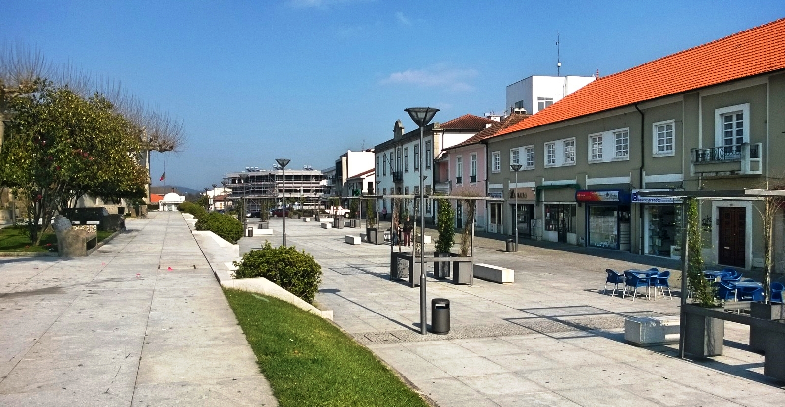

Lousada: O Românico no Coração de um Concelho Jovem
Lousada é um concelho que vive uma dualidade única e vibrante: é um guardião de uma história milenar...
Galerias de Imagens


Conheça Mais Sobre Lousada
Para aprofundar o seu conhecimento sobre Lousada...
Visitar Site Oficial de Lousada